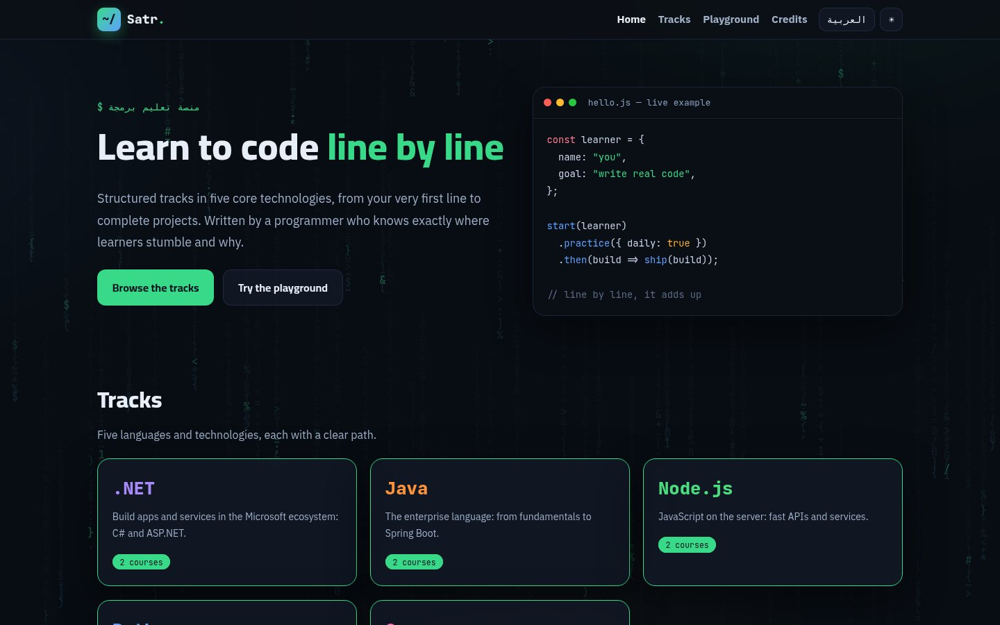
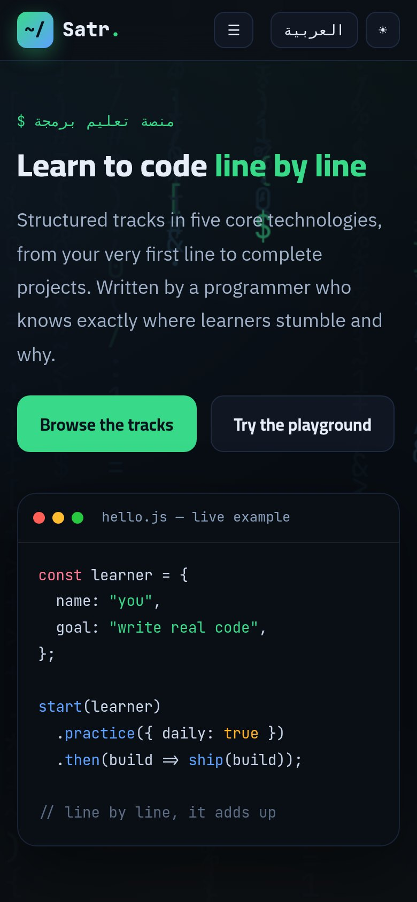
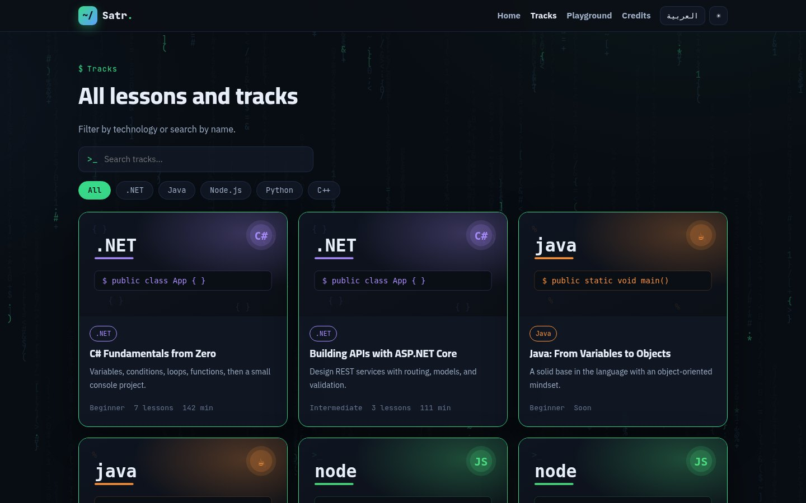
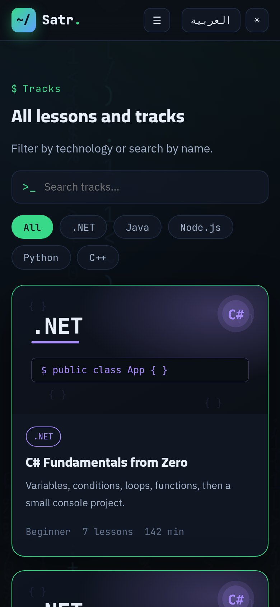
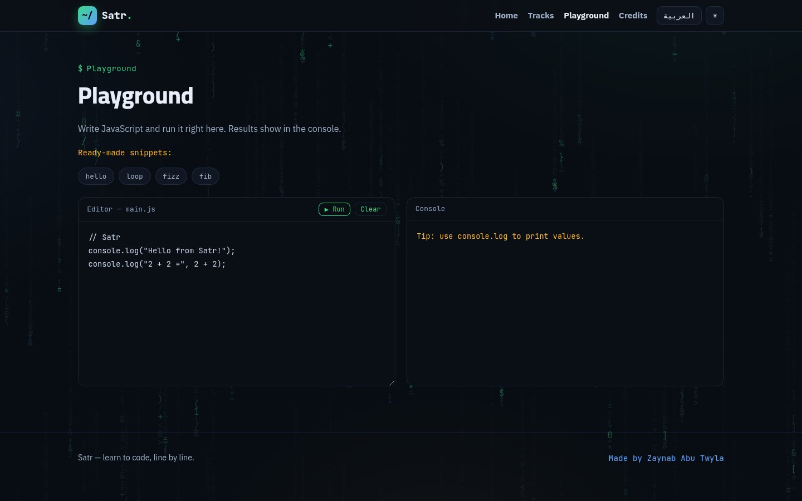
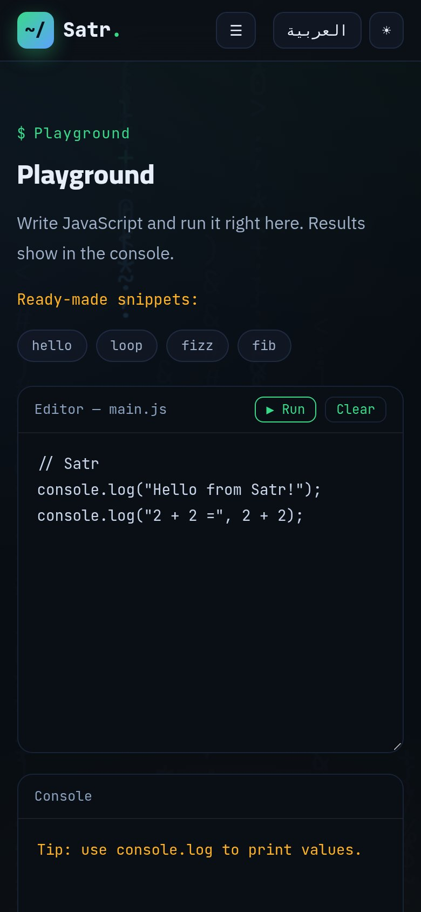

Filter by type, then flip through each project on a laptop and on a phone, open its details, or visit the live site.
No projects in this type yet.
1 / 3






Home
Satr
Learn programming line by line
Satr is a programming-courses website in Arabic and English. A learner picks one of five tracks, opens its courses and lessons, and can try code straight away in a built-in playground without installing anything.
A bold dark landing page for an Egyptian streetwear brand. It opens on the winter collection, then moves through a filterable product grid, a lookbook, customer opinions, discounts and a working cart.
A warm website for a Syrian restaurant. Deep green, Arabic calligraphy and arch-inspired shapes set the mood, then a menu you can filter by course leads to the brand story and an inquiry form.
A clean, trustworthy landing page for a dental clinic. Patients see the services, the doctors and the common questions in one scroll, with a booking call to action always within reach.
Manhal is an Arabic and English courses marketplace for programming, design, marketing, languages and business. Visitors search, browse by category, compare courses, and open a course page that lays out what they will learn.
A calm skincare store with a clear promise: plain ingredients, short routines and no exaggerated claims. Shoppers browse the collection, add products to a bag and follow a morning and evening routine.
A bold portfolio site for a graphic and brand designer. A strong orange and black hero leads into a selected-work list, an about section and a contact call to action.
A high-energy black and lime website for a training club. It splits training into strength, conditioning and mobility, shows a weekly class schedule, and ends with an inquiry form.
Fasli is a student platform in Arabic and English. Students pick their grade, sign in and follow video lessons with a summary for each one, in a warm, friendly design made for younger users.
A playful pizza club website with a checkerboard design and a friendly voice. Visitors read the menu, add pizzas and change the quantity in a basket that updates the total live.
A quiet landing page for a furniture and decor brand. Large room photography comes first, the details follow, and a consultation form invites visitors to start with one corner of their space.
BlueSky Airways is a flight booking website built with Bootstrap and TypeScript. The home page puts a quick flight search, a weather widget, a calendar and the latest offers up front, and a step-by-step booking page follows.
A cinematic landing page for a photographer. Frames fill the screen, a gallery opens full size on click, and a project form asks what story the visitor wants to tell.
Khuzana is a women's fashion store front end in Arabic and English. Clothes, bags and shoes sit in one editorial design language, with a lookbook, product pages and a cart.
A warm landing page for a specialty coffee shop. It tells the roasting story, shows an interactive menu, collects customer opinions and ends with a table booking form.
A full school website from kindergarten to secondary school, in Arabic and English. Parents move between the school story, the four stages, activities, teachers, news and the admission steps.
A soft pink and olive landing page for a flower shop. Visitors browse bouquets by feeling or occasion and send a note about the colors and message they want.
A cheerful bakery website in yellow and red. It shows the day's bakes with a sweet and bread filter, explains the three steps behind each loaf and offers a box request for events.
A slow, quiet landing page for a countryside retreat. Cabin photography, three simple day moments and a stay planner for dates and guests set the pace.
A gentle skincare landing page in soft peach and sage. Visitors pick morning or evening and see the order of care steps, then explore the products on the shelf.
Masahati is a ready-made personal page that anyone can fill with their own details. It has a card layout with an intro, a links section and contact fields that are changed from one settings file without touching the design.
A modern gym landing page with a light and dark mode switch. It presents classes, three membership plans, trainers, a gallery and a fitness calculator, with smooth transitions between sections.